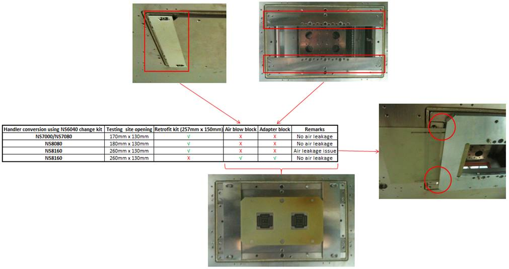

Service History
Subject: ASE Enquiry of NS8080HW specification, capability and costing
Handler Model:
Controller:
Date: 17 Mar 2011
Symptom
Action
Enquiry of NS8080HW specification, capability and costing.
NS7080
1. Replacement of chamber screw to avoid collusion upon using Octal layout kit.
Target date to be advise by Iwata.
NS8040 & NS8080
1. Jet heater/socket air heater verification on the following handlers:
� H03-NS88 (S/n: 181649)
� H04-NS88 (S/n: 181694)
� H07-NS88 (S/n: 181761)
� H501-NS88 (S/n: 181823)
Target to verify with Getech engineer on 21st March 11.
2. Enhancement of insulation on shuttle sensor cable on the following handlers:
� H01-NS88 (S/n: 181618)
� H02-NS88 (S/n: 181648)
� H03-NS88 (S/n: 181649)
Target to verify with Getech engineer on 21st March 11.
3. Support block modification on site 2 handlers:
� H06-NS84 (S/n: 181589)
� H07-NS84 (S/n: 181590)
� H13-NS88 (S/n: 181593)
� H14-NS88 (S/n: 181594)
� H15-NS88 (S/n: 181655)
Target date to be finalise once all handlers has transfer to site 1.
4. NS8040 Global temperature software development using version HMI P10.13 SAS.
Target date to be advise by Iwata.
NS8160
Here are the following items to be address:
1. Fix 3 tray capability – Enable “exists” on rotator stage on HMI configuration (Done)
2. Support block and layout kit(engraving of arm 1 & 2) modification
3. Do not have busy shuttle capability
4. NS8160 converison to NS64 chan
5. Does site 2 handler NS7160 has air blow block capability?
Handler conversion to NS64 change kit

Upon conversion of NS64 change kit on NS8160 encounter air leakage upon using retrofit kit.
Due to retrofit kit dimension 257mm is less than NS8160 testing site opening of 260mm.
Secondly use of air blow block and adapter kit to perform conversion. – No issue
But is a big hassle to revert back to NS7000/2x2 change kit.
Need to remove air blow block and adapter block and put air blow block again.
Therefore we would like to minimise the conversion and confusion.
First of all we need to know NS7160 from site 2 do have air blow block?
If yes, we can modify retrofit kit to NS7000 standard dockplate dimension.
If no, retrofit kit might need modification to prevent air leakage.
Cause
Remarks
Refer email on 26 Apr 2013 on NS8080 Jet Heater (socket blower) installation procedure.